Лабораторная работа 4. Реализация клиентской части средствами Vue.js
Вариант 15: Менеджер альпинистских клубов
Описание интерфейсов
- Регистрация, авторизация, выход из аккаунта
- Профиль
- Просмотр текущего пользователя (username, email, имя, фамилия, телефон, город, клуб)
- Изменение этой информации
- Восхождения
- таблица восхождений (даты, гора, маршрут, кол-во участников, успешность похода)
- создание нового восхождения (админ)
- Детали восхождения
- Просмотр более детальной информации о восхождении (запланированные и действительные даты, гора, маршрут, успешность, summary)
- Изменение этой информации (админ)
- Участвовать в походе. выписаться из списка участников
- Список участников (пользователь, его клуб, успешно или нет окончил поход, тип происшествия (если есть), детали происшествия)
- Изменение и удаление участия пользователя в походе (админ)
- Мои восхождения
- таблица участий в восхождениях пользователя (даты, гора, маршрут, кол-во участников, успешность похода, успешность самого пользователя, тип происшествия)
- Клубы
- Таблица клубов (название, страна, город, кол-во участников)
- Создание клуба (админ)
- Детали клуба
- Просмотр деталей клуба (название, страна, город, контактное лицо)
- Изменение этих данных (админ)
- Присоединиться к клубу/выход из клуба
- Список учасников (пользователь, дата зачисления в клуб)
- Удаление учасника клуба (админ)
- Отчет
- Таблица, в которой для каждой горы отражается список восхождений, в хронологиском порядке (можно настроить). Для каждого восхождения выводится информация о количестве членов в группе и успешность.
Экраны:
1. Авторизация
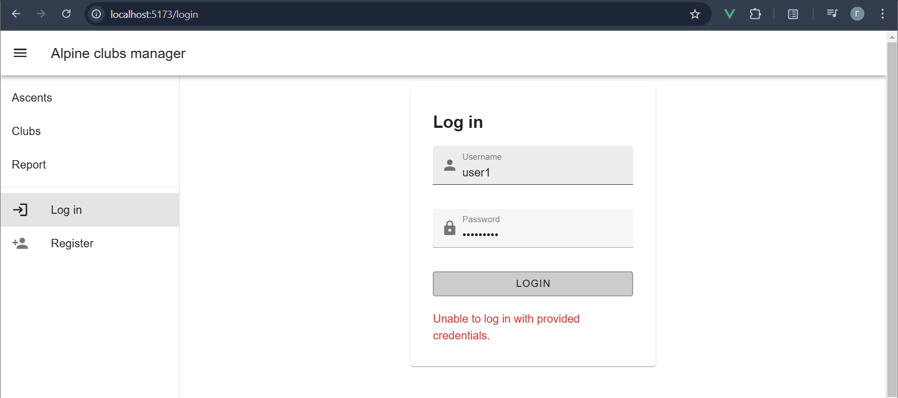
2. Регистрация
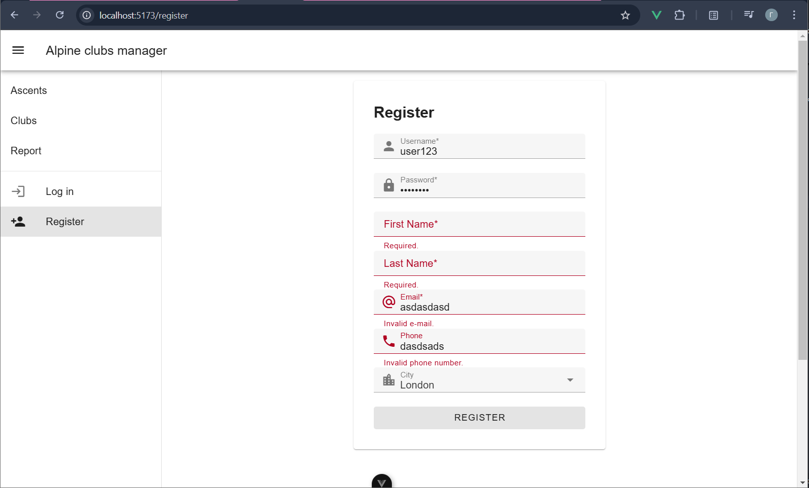
2. Профиль
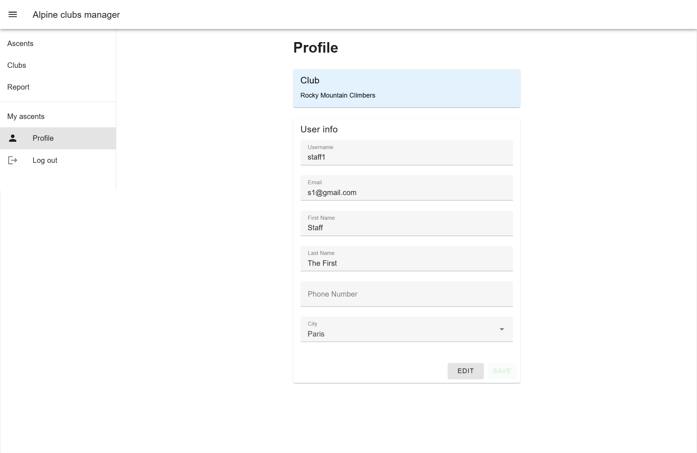
3. Восхождения (Ascents)
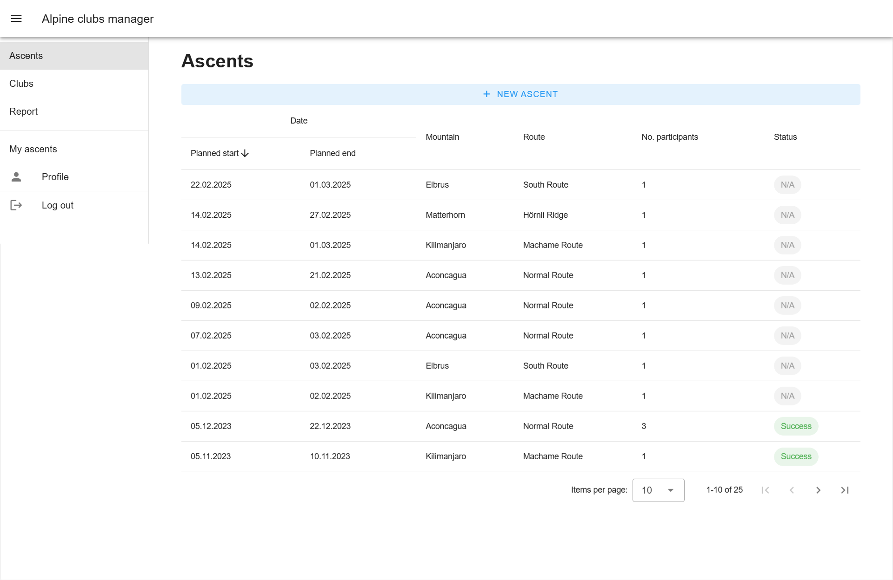
Создание восхождения: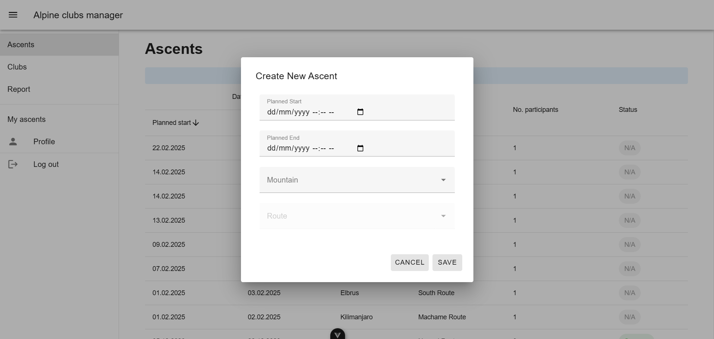
4. Детали восхождения
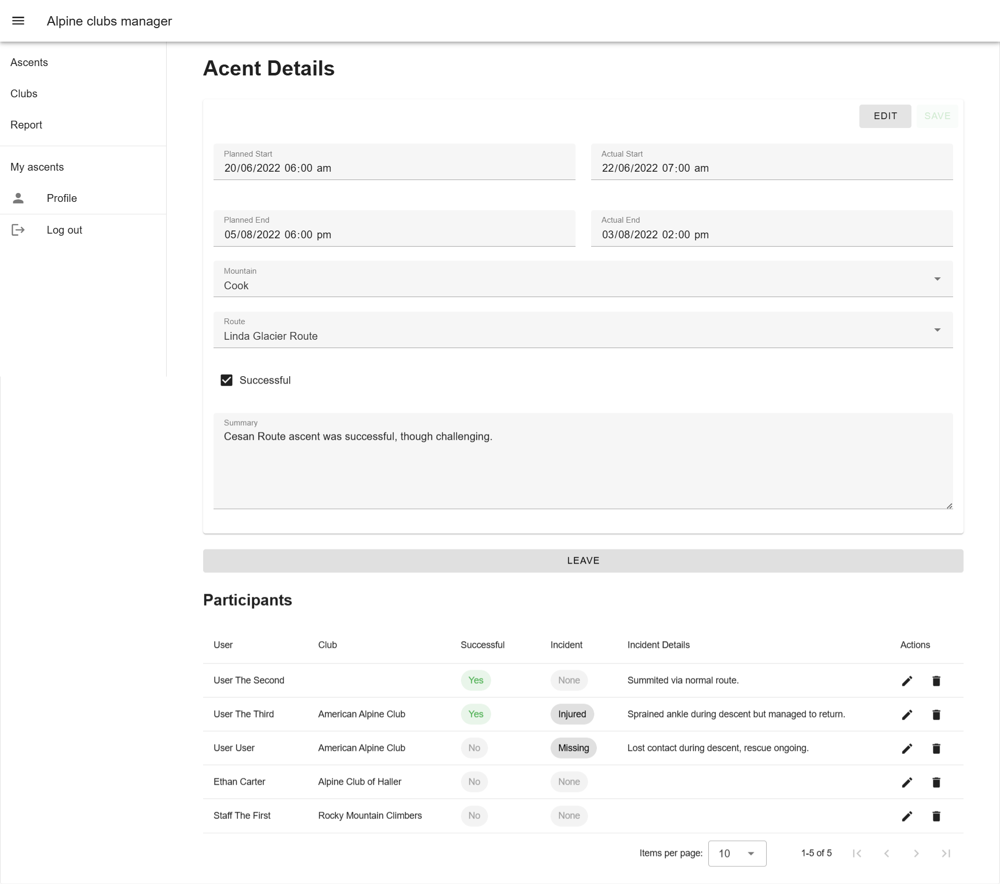
Редактирование участника восхождения: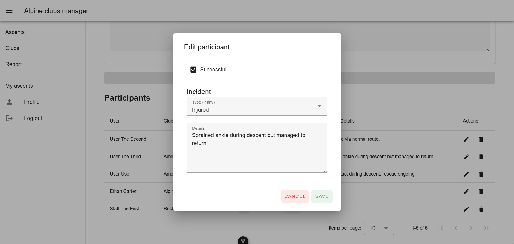
5. Мои восхождения
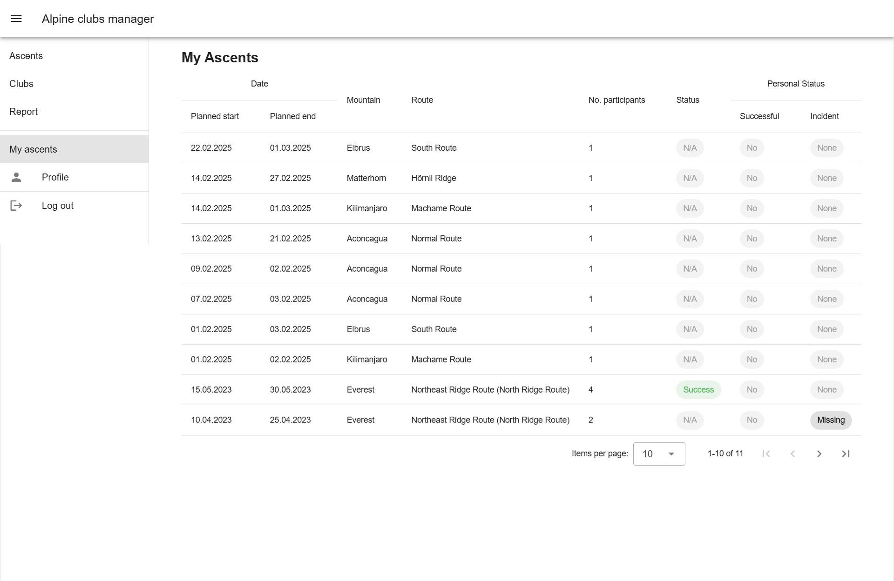
6. Клубы
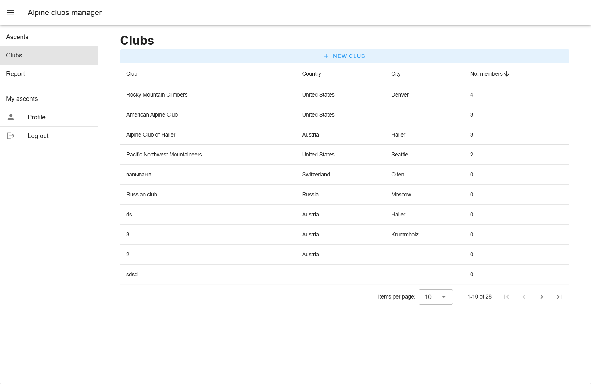
Создание клуба: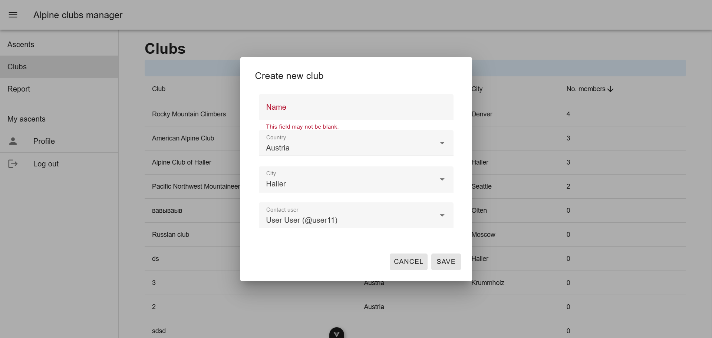
7. Детали клуба
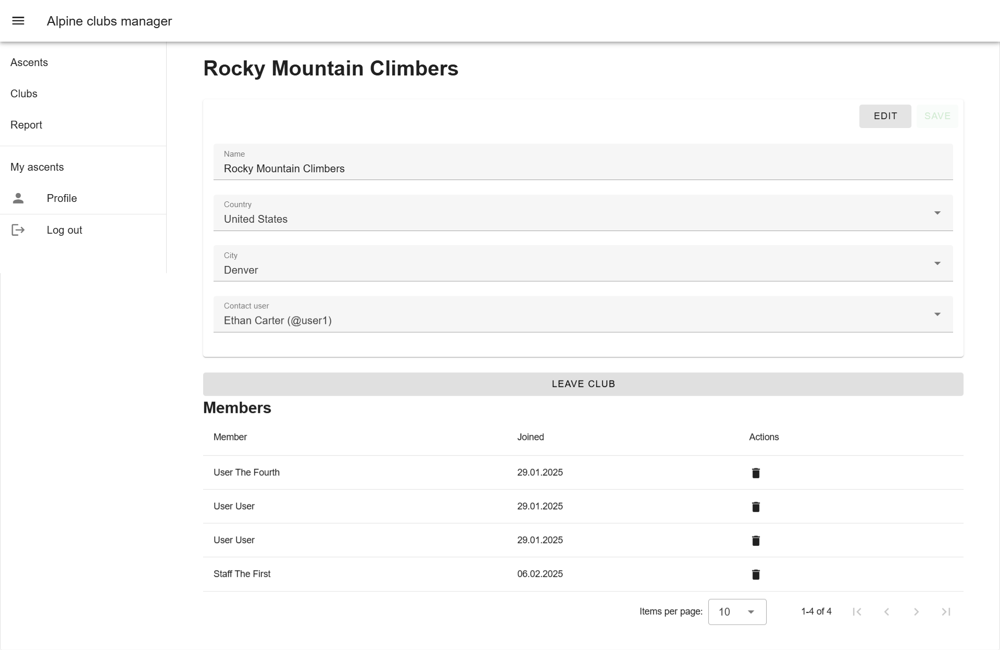
7. Отчет
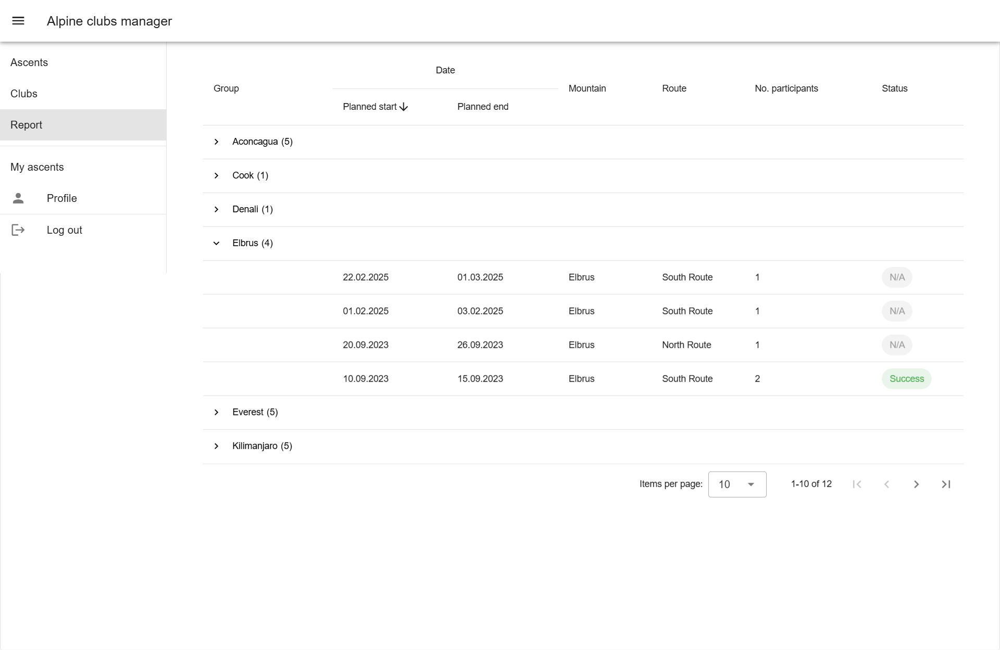